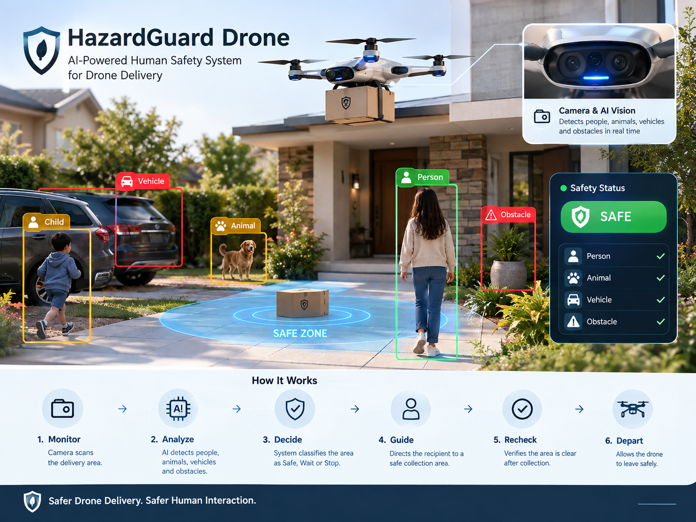

A human-centered AI safety layer that continuously assesses the delivery area, detects changing hazards, and decides whether delivery should proceed, wait, or stop.
Safety at the delivery point — not only during flight.
Residential delivery areas can change while a drone approaches or prepares to release a package. A person, child, animal, vehicle, or obstacle may enter the interaction zone unexpectedly.
A simple decision layer translates the scene into an action.
No relevant hazard is detected in the delivery zone. The process may continue.
A temporary or uncertain condition is present. Delivery pauses while the system reassesses.
A significant hazard is detected. The delivery is held or aborted until conditions are acceptable.
From visual input to an explainable delivery decision.
Camera input observes the delivery area.
AI vision identifies people, animals, vehicles and obstacles.
Detected objects are followed across frames to understand movement.
The system considers position, movement and proximity to the delivery path.
Potential path conflicts are estimated before the next action.
The safety engine selects SAFE, WAIT or STOP and explains why.
The recipient is directed to the designated interaction area when appropriate.
The scene is reassessed before collection and again before departure.
The drone resumes its route only after the area is confirmed safe.
The latest software work completed for the HazardGuard Drone proof of concept.
Programming was developed to calculate and evaluate the distance between the drone and detected people, vehicles, animals and obstacles, so the decision is based on proximity rather than detection alone.
The safety logic combines object type, distance, movement and route conflict to determine the current level of delivery risk.
The system can issue SAFE, WAIT, STOP, HOLD, AVOID or ABORT DELIVERY decisions according to changing conditions.
Detected objects are tracked across video frames to monitor movement and identify changing conditions around the drone.
When the planned path becomes unsafe, the simulation can evaluate a safer route and change the drone path before a predicted conflict.
The simulator includes GPS position and mission-state logic so the drone can move through takeoff, navigation, delivery, return and landing stages.
Signal and battery conditions are included in the simulated mission monitoring instead of treating the flight path as the only safety factor.
The package remains attached during the mission, is handed over at the delivery point, and the drone then performs a safety recheck before returning to base.
Important movement, hazard and decision events can be recorded to make the simulation easier to inspect and evaluate.
The concept includes guidance toward a designated safe collection position and pauses the delivery when the interaction area is not safe.
Depot → package loading → takeoff → AI route → hazard monitoring → delivery → post-delivery safety check → return-to-base → landing → completion.
The current implementation is a software simulation/proof of concept built to demonstrate the proposed AI safety workflow before any future controlled real-drone testing.
Current visual prototype demonstrating the proposed safety workflow.

The simulation illustrates the intended workflow; it does not claim commercial deployment of the complete system.
What the proposed safety layer is designed to demonstrate.
Reduce potentially unsafe human–drone interactions during package collection.
Respond to changing conditions instead of relying on a fixed delivery-area assumption.
Pause, hold, or resume the delivery according to the current scene.
Connect each safety decision to a clear action and reason.
From software simulation toward controlled prototype testing.
Future work will focus on real-time camera integration, stronger multi-object tracking, path-risk prediction, recipient guidance, controlled drone integration, and measured evaluation using detection accuracy, response time, false alerts, missed hazards, and decision consistency.
From object detection to safety decisions.
Object detection answers “what is in the image?” HazardGuard adds “what should happen next?”
Recent software improvements added to the HazardGuard Drone simulation.
The safety engine now evaluates the distance between the drone, detected objects, vehicles, people, and the planned delivery path instead of relying only on object presence.
The simulation combines distance, movement and predicted path conflict to produce clearer SAFE, WAIT, STOP, HOLD, AVOID or ABORT DELIVERY decisions.
When a potential collision or unsafe path is detected, the software can evaluate a safer alternative route rather than continuing blindly on the original path.
Tracked objects are monitored across frames so the system can distinguish changing movement conditions and react to hazards that enter the delivery area.
The simulator includes GPS, signal and battery status checks as part of the mission-state logic and safety monitoring.
The latest simulation follows the package from loading and takeoff through navigation, safe handoff, post-delivery area recheck, return-to-base and landing.
The software records important movement and safety events to make the simulation easier to inspect, explain and evaluate.
Each decision is connected to observable conditions such as object type, proximity, movement and route risk, supporting transparent safety reasoning.
The current implementation is a software simulation/PoC developed to demonstrate the safety logic before any future controlled real-drone testing.
Background sources supporting the safety concept.